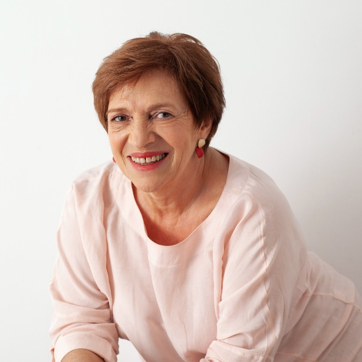
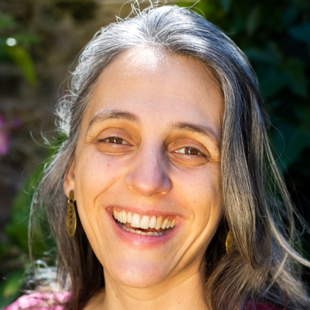

{% extends "home/index.html" %}
{% load static %}
{% block seci_project_content %}
Nuestros Profesionales
{% if user.is_authenticated %}
{% endif %}
{% for profesor in profesors %}
-
{{profesor}}
{% if user.is_authenticated %}
(
|
)
{% endif %}
{% endfor %}

ANNI SCHUFF
Es fundadora y creadora del SECI® (Sistema de Entrenamiento Continuo Integral) y Directora General y Académica de la organización. Es Profesional Sistémica del Trauma Somático Individual, Familiar, Organizacional y Social. Acompaña a personas, familias, grupos, equipos y líderes. Es impulsora y consultora de proyectos exitosos, interviene en la resolución de conflictos, es investigadora, docente, autora y entrenadora de equipos profesionales. Tiene maestría en el entrenamiento de prácticas de observación, atención y presencia. Es también miembro y profesional internacional de la Hellinger Shulle, y tiene un posgrado en Constelaciones Originales Hellinger de la Faculdade Innovare de São Paulo, Brasil, en convenio con la Hellinger Schulle de Alemania.
Con más de treinta años de trayectoria, acompaña a personas, familias, grupos, organizaciones y empresas en procesos sostenidos de autodescubrimiento, transformación y apertura a nuevas posibilidades de acción.

CARO SCOTTI
Líder del proyecto, artista, educadora, Profesional SECI
Es Responsable de Pogramas para infancias y jóvenes del área de Crianza y Pedagogía del SECI junto con Aída Sirinian. Se desempeña como Profesional SECI en actividades con personas adultas, jóvenes, infancias y familias. Se formó en el campo de las Artes Visuales, las Artes Escénicas y la Danza Contemporánea. Estudió Diseño Escénico y Publicidad, y trabajó como Directora de Arte y Escenógrafa en teatro, cine y televisión. En 2017 terminó la Diplomatura de Artes Visuales en la UNSAM, y continúa actualmente su formación en la Diplomatura de Arte Contemporáneo.
Realiza capacitaciones a docentes de nivel inicial y primer ciclo de primaria en escuelas públicas y privadas, ofreciendo recursos para el aula: para enseñar lúdicamente y presentar creativamente los contenidos. Desde 2011 participa con sus trabajos en muestras artísticas colectivas. Sus últimos trabajos como artista están enfocados en generar obra de participación comunitaria para la transformación social.
{% endblock %}